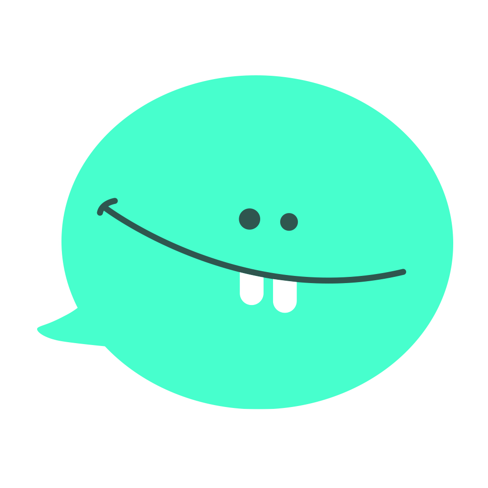

Améliorer un chatbot déjà développé, avant son déploiement auprès de vrais utilisateurs
Été 2026 • BearingPoint × Centres Relier

Objectif : consolider et améliorer un chatbot sur lequel l’équipe avait déjà travaillé l’an dernier, afin de préparer son déploiement auprès de vrais utilisateurs dès septembre 2026.
01
Point de départ
Une mission courte face à une ambition mondiale
Une association engagée
Centres Relier, association loi 1901, agit pour prévenir les cyberviolences chez les jeunes.
Monster Messenger
Un agent IA fondé sur des contenus de référence issus du Google Impact Challenge on Safety (2019).
Ambition 2026
6 langues • 80 pays Une hausse attendue des volumes de conversations et des tokens.
Dispositif pro bono
Deux vagues en août 2026 Analyses conversationnelles et éthique, puis une semaine dédiée au RAG.
Passer d’un chatbot qui fonctionne à un système que l’on sait observer, évaluer et faire évoluer.
Sources internes : Outlook & Teams — août 2026
02
Périmètre
Six chantiers, des niveaux de maturité contrastés
B1Traité
Consolidation de vues SQL
Structurer les données avec des requêtes et vues SQL d’analyse.
B2Traité
Analyse thématique des conversations
Catégoriser les conversations et identifier les sujets les plus fréquents, via une approche LLM as a judge.
B3Traité
Analyse des stratégies recommandées
Évaluer, via LLM as a judge, la façon dont le chatbot recommande des actions aux enfants.
B4Traité
Évaluation de la performance RAG
Évaluer les performances du RAG, notamment la qualité du retrieval.
B5Traité
Tests de robustesse du chatbot
Tester les prompt injections et les comportements déviants du chatbot.
B6Non traité
Génération de jeux de test
Chantier restant à cadrer et engager.
Sources internes : Outlook & Teams — août 2026
03
Au programme
Qu’allons-nous explorer ?
Une démonstration, trois retours d’expérience et un même fil rouge : améliorer le chatbot avant son déploiement.
Observabilité
Langfuse — démo
Lire les traces, comprendre les sessions et exploiter les données conversationnelles.
Évaluation
LLM as a judge
Évaluer les conversations, les stratégies recommandées et la performance du RAG.
Industrialisation
GitHub Actions
Nos retours sur l’automatisation, les intégrations et les points de vigilance.
REX & risques
Vibe coding & coûts
Ce que la semaine a accéléré, ses limites et le risque de coût mis en évidence par un incident vécu par l’association.
Viser la vitesse d’itération sans perdre la maîtrise : qualité, sécurité, coûts et maintenabilité.
Sources internes : Outlook & Teams — août 2026
04
Observabilité
Langfuse : rendre les conversations lisibles et actionnables
Retrouver
Les traces et sessions réelles.
Comparer
Questions, réponses, contexte et métadonnées.
Échantillonner
Pour analyser comportement et performance RAG.
Alimenter
Les traitements batch et les KPI.
Couche centrale de la mission
L’observabilité relie la réalité des échanges aux décisions produit, éthiques et documentaires.
Séparation des environnements
Anciennes traces migrées dans mmdev. Après le 18 mai 2026, séparation entre mmdev et mmprod.
Sans traces fiables, pas d’évaluation fiable.
Sources internes : Outlook & Teams — août 2026
05
Démonstration
Langfuse : du projet à la conversation complète
1
Ouvrir le projet mmdev ou mmprod.
2
Filtrer une période ou un forum utilisateur.
3
Lire input, output, contexte et métadonnées d’une trace.
4
Regrouper par session pour suivre tout l’échange.
5
Exporter ou exploiter les traces en analyse batch.
LLM as a judge : détecter où le corpus doit progresser
Objectif métier
Une base documentaire utilisée et correctement restituée dans au moins 90 % des questions.
Point de départ : 100 questions tests issues de forums utilisateurs.
Ce que le juge apporte
Classifier les questions in scope / hors scope
Mesurer la couverture du RAG
Détecter les thèmes manquants
Produire des recommandations de contenu
LLM
Présélectionner, regrouper, signaler
+
CSAE
Valider, arbitrer, décider de l’intégration
Les sujets graves restent in scope, avec redirection vers les services spécialisés. Toute proposition de contenu passe par la validation du CSAE.
Sources internes : Outlook & Teams — août 2026
07
Méthode & contrôle
Un prompt = un rôle précis dans le workflow
Le LLM ne “donne pas une note” en une fois. Chaque prompt pose une question bornée, reçoit un référentiel et la conversation, puis renvoie une sortie structurée. Le code applique ensuite les règles de scoring.
5. QuestionnaireUne section à la fois SectionAssessment
Important : les prompts identifient les éléments et les preuves ; profile_scoring.py et questionnaire_scoring.py calculent ensuite les scores de façon déterministe.
La recette commune
Comment construit-on un prompt fiable ?
1 · Rôle“Tu analyses une conversation…”
2 · QuestionUne décision explicite, pas une impression globale
3 · RéférentielLes critères ou exemples comparables
4 · PreuvesExtraits exacts, uniquement des messages ENFANT
5 · IncertitudeNe pas forcer : false, unknown ou null
6 · ContratUne sortie JSON exploitable par le code
Exemples réels de prompts
Détection
“Détermine si les faits relèvent d’une cyberviolence… Le doute doit profiter à la détection.”→ CyberviolenceDetection
Rattachement
“Compare le sens des situations. Si plusieurs exemples conviennent, sélectionne le plus précis. Ne force pas.”→ ReferenceMatch
Nouvelle catégorie
“Propose une catégorie courte et distincte et un exemple générique. N’invente aucun fait.”→ NewCategoryProposal
Profil global
“Pour chaque critère, present=true seulement si l’enfant le confirme clairement.”→ ProfileAssessment
Section questionnaire
“Pour chaque critère, retourne confirmed, not_confirmed ou unknown. Ne calcule aucun score.”→ SectionAssessment
Dans tous les cas
“Les preuves doivent provenir exclusivement des messages marqués ENFANT.”→ auditabilité
À retenir : le prompt ne remplace pas le workflow : il documente une décision locale. La qualité vient de l’enchaînement référentiel → conversation → preuve → sortie structurée → scoring déterministe → revue des cas ambigus.
Sources internes : Outlook & Teams — août 2026
08
Industrialisation
GitHub Actions : passer du script local à une capacité opérée
Automatiser les analyses sans dépendre d’un poste local.
État : Action déployée et testée en dev ; promotion vers main à sécuriser.
B1 : scripts fonctionnels sur les données de production, intégration à l’Action encore partielle.
Approche : démarrer sur un périmètre limité et une plage courte.
Performance observée : ≈ 2 min pour 1 jour ; > 20 min pour 7 jours.
Surveiller les appels LLM Gemini et leur coût.
Mise en œuvre
Déclencheur : schedule (1 fois par mois)
Secrets : clés API Langfuse & Google (IA sur Vertex AI)
Un workflow par environnement : dev & prod
Déclencheur
→
Secrets
→
Extraction
→
Analyses
→
Artefacts / tables
→
Contrôle
Workflow export-csv · cliquer pour agrandir
Sources internes : Outlook & Teams — août 2026
09
REX de delivery
Vibe coding : accélérer l’exploration
Prototypage rapide des scripts, prompts et workflows.
Itérations plus courtes pour explorer plusieurs approches.
Premier résultat fonctionnel malgré un temps très limité.
Apprentissage par la construction directe.
Bon terrain pour des modules isolés, documentés et testables.
Vitesse d’exploration élevée
Le vibe coding est un accélérateur de découverte, pas un substitut à l’ingénierie.
Sources internes : Outlook & Teams — août 2026
10
REX de delivery
Vibe coding : savoir où il aide, où il fragilise
Utile pour
Prototyper une feature isolée
Explorer plusieurs options rapidement
Construire dans un dossier dédié
Documenter et tester un module borné
Dangereux quand
La base de code est complexe et mal maîtrisée
Les modifications deviennent larges ou transverses
La dette technique et le risque de régression augmentent
Le code produit devient difficile à reprendre
Le vibe coding est efficace dans un périmètre maîtrisé ; au-delà, la vitesse doit laisser place à l’ingénierie.
Sources internes : Outlook & Teams — août 2026
11
Passage à l’échelle
GCP : préparer la soutenabilité avant la hausse d’usage
Cloud Run • Cloud Storage • API Gemini • Vertex AI • BigQuery • Secret Manager • quotas • alertes • budgets • AI Studio
01
Sécurité
Maîtriser l’exposition du chatbot et prévenir l’abus d’une URL trop largement accessible.
02
Coûts
Installer budgets, alertes et suivi d’usage avant la montée en volume.
03
Scalabilité
Prévoir des tests de charge et optimiser l’architecture pour l’international.
04
Exploitabilité
Fiabiliser le redéploiement CI/CD, les quotas et la supervision.
Des crédits de recherche étaient annoncés jusqu’à fin octobre 2026 : la soutenabilité doit être préparée au-delà.
Sources internes : Outlook & Teams — août 2026
12
Synthèse
Consolider la boucle, puis la faire vivre
Ce qui marche
Traces exploitables
Premiers pipelines
Évaluations RAG
Automatisation en dev
Ce qu’il faut consolider
Tests sur échantillons
Promotion vers main
Critères du juge
Suivi coût / performance
Prochaine boucle
Observer → Évaluer → Valider → Déployer → Mesurer
Prochaine étape
Appel aux consultants volontaires pour contribuer à la prochaine édition, en 2027.